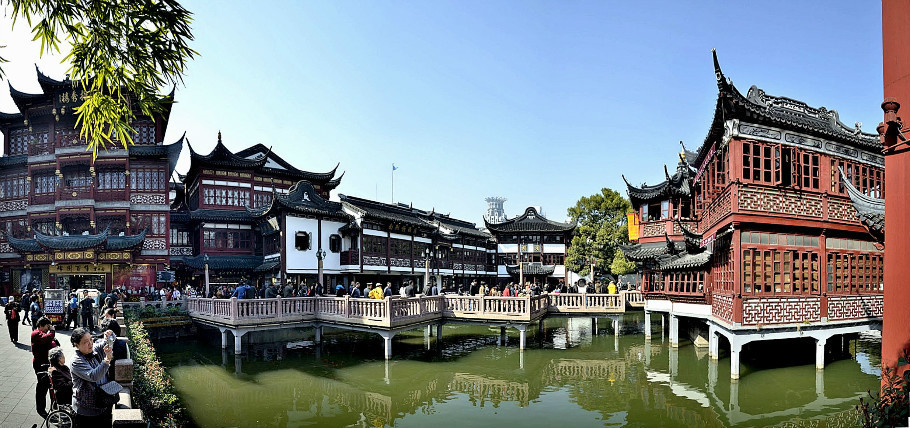

上海城隍庙是指黄浦区的老城隍庙，在旅游景点中都称为“豫园”，即原上海县城隍庙，这是个著名的江南古典园林，全国重点文物保护单位。 “到上海不去城隍庙，等于没到过大上海。”可见老城隍庙在上海的地位和影响。 作为上海市具有悠久历史的城隍庙，每年都会吸引相当多的游客来这里观光旅游。城隍庙小吃也随着城隍庙的走红而闻名全国。 今天的上海城隍庙，包括霍光殿、甲子殿、财神殿、慈航殿、城隍殿、娘娘殿、父母殿、关圣殿、文昌殿九个殿堂，总面积约二千余平方米。1926年城隍庙再重建，殿高4.8丈，深6.34丈，钢筋水泥结构，而彩椽画栋、翠瓦朱檐。
上海老城隍庙原为霍光神祠，供奉的是西汉名将霍光神主。上海建城隍庙，相沿成习，霍光成了上海资格最老的城隍爷。0 另说城隍爷是秦裕伯，上海县陈行人，另有说是元末明初河北大名人。传说他是一个孝子，因其母感叹未见过金銮殿，故专门建了一座像金銮殿的建筑。被人告密，皇帝派员来查，他就连夜将殿改成金山神庙，躲过了一场灾祸。清军南下时，遭到上海地区人民的强烈抵抗，清军将领原准备屠城。屠城前夜，清军将领梦见了秦裕伯，秦警告他不准杀人，这才取消了屠城计划。因秦裕伯“显灵”，救了上海百姓，故被列为城隍爷。 据说上海人真正顶礼膜拜的还有第三位城隍爷。1937年抗日战争爆发后，市民从“陈公祠”中请出了1842年第二次鸦片战争中血染吴淞口、在吴淞炮台战死的江南提督陈化成的神像。当年被供奉在大殿后进的陈化成塑像，被民间雕塑家塑成满面火红、神采飞扬、目光炯炯、栩栩如生的英雄形象。这三尊城隍爷在“文革”中被“扫地出门”,现已尊神归位。 因此上海城隍又有“一庙三城隍”的说法。 上海城隍庙的小吃可谓是非常丰盛，不胜枚举，进去之后简直让人目不暇接： 南翔小笼、叉烧包、鸡腿饭、肉粽、三丝春卷、大排面、 蟹壳黄、豆浆、油条、素菜包、 紫米球、 椰奶紫米球、 红薯粥、开洋葱油拌面、 荠菜馄饨、重油煎馄饨、锅贴等。